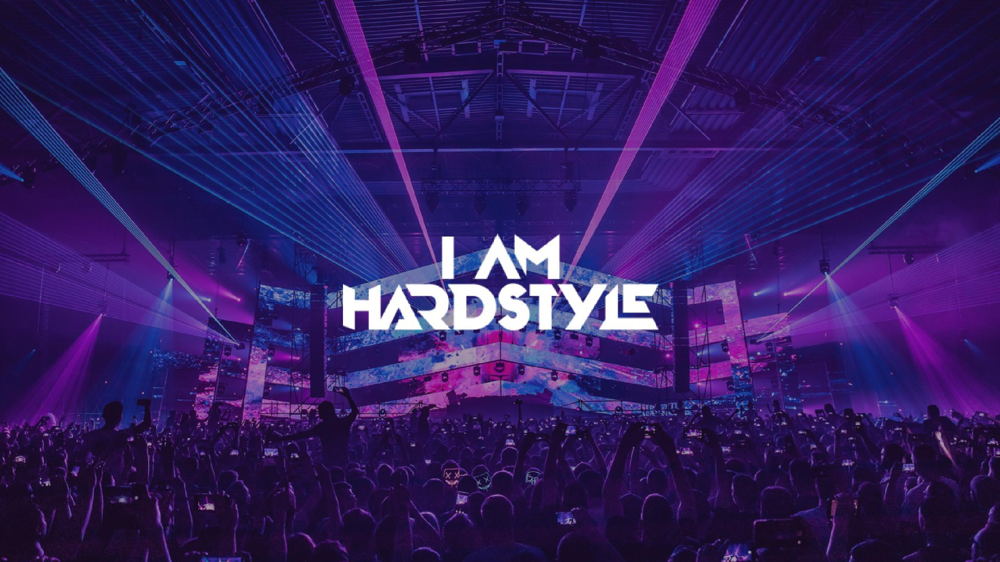

A propos
Le Hardstyle est une passion pour moi, je suis tout de suite tombé amoureux de ce genre de musique dès que je l’ai découvert et entendu pour la première fois, dans les années 2013/2014. Le temps s’est écoulé jusqu’à aujourd’hui sans que je n’écoute sans cesse du Hardstyle, alors il était logique pour moi de rendre hommage au style de musique qui a bercé ma jeunesse et changer ma vie. Le but de ce site était à but évaluatif, à l’origine, dans notre parcours de première année de Master Médiation Numérique de la Culture et des Patrimoines en Humanité Numérique, nous devions faire un petit site web sur un sujet libre pour être évalué, dans le cadre du cours des Systèmes d’Exploitations et Web. Ayant un côté perfectionniste, ce site devait être plus que convenable à l’image du style de musique que j’idolâtre, il a été pensé et conçu par moi-même. Ce site est une présentation du Hardstyle, pour faire découvrir aux gens et partager ma passion pour ce genre. Le Hardstyle est plus qu’un mélange de sons, plus que du bruit, plus qu’une musique, c’est quelque chose qui se ressent et nous fait vibrer. Ce n’est pas comment on écoute la musique, c’est comment on la ressent, vibrer comme le son, vibrer comme le Hardstyle, I am Hardstyle !
Gabin
Gabin
